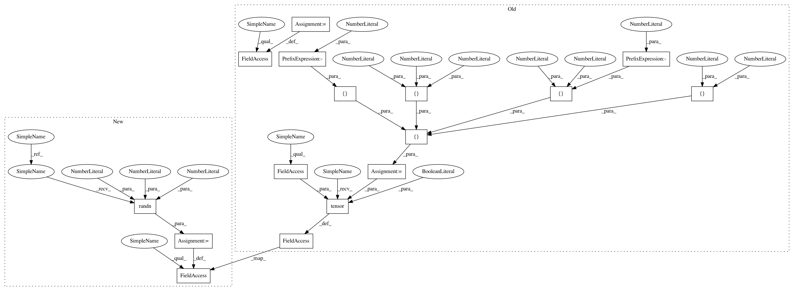

91b0d220c8e816766fd4565e1d2f5115d3afbefe,test/functions/test_matmul.py,TestMatmulBatch,setUp,#TestMatmulBatch#,53
Before Change
class TestMatmulBatch(unittest.TestCase):
def setUp(self):
mats = [[[3, -1, 0], [-1, 3, 0], [0, 0, 3]], [[10, -2, 1], [-2, 10, 0], [1, 0, 10]]]
vecs = torch.randn(2, 3, 4, requires_grad=True)
self.mats_var = torch.tensor(mats, dtype=torch.float, requires_grad=True)
self.mats_var_clone = self.mats_var.clone().detach().requires_grad_(True)
self.vecs_var = vecs
self.vecs_var_copy = vecs.clone().detach().requires_grad_(True)
def test_matmul_multiple_vecs(self):
// Forward
After Change
class TestMatmulBatch(unittest.TestCase):
def setUp(self):
mats = torch.randn(2, 5, 3)
vecs = torch.randn(2, 3, 4)
self.mats = mats.detach().clone().requires_grad_(True)
self.mats_copy = mats.detach().clone().requires_grad_(True)
self.vecs = vecs.detach().clone().requires_grad_(True)
self.vecs_copy = vecs.detach().clone().requires_grad_(True)
In pattern: SUPERPATTERN
Frequency: 3
Non-data size: 16
Instances
Project Name: cornellius-gp/gpytorch
Commit Name: 91b0d220c8e816766fd4565e1d2f5115d3afbefe
Time: 2018-10-12
Author: gpleiss@gmail.com
File Name: test/functions/test_matmul.py
Class Name: TestMatmulBatch
Method Name: setUp
Project Name: cornellius-gp/gpytorch
Commit Name: 91b0d220c8e816766fd4565e1d2f5115d3afbefe
Time: 2018-10-12
Author: gpleiss@gmail.com
File Name: test/functions/test_inv_matmul.py
Class Name: TestInvMatmulBatch
Method Name: setUp
Project Name: cornellius-gp/gpytorch
Commit Name: 91b0d220c8e816766fd4565e1d2f5115d3afbefe
Time: 2018-10-12
Author: gpleiss@gmail.com
File Name: test/functions/test_matmul.py
Class Name: TestMatmulBatch
Method Name: setUp
Project Name: cornellius-gp/gpytorch
Commit Name: 91b0d220c8e816766fd4565e1d2f5115d3afbefe
Time: 2018-10-12
Author: gpleiss@gmail.com
File Name: test/functions/test_inv_quad_log_det.py
Class Name: TestInvQuadLogDetBatch
Method Name: setUp